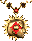
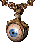
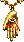
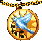
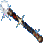
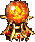

Artifact Boost — отчёт по улучшенным артефактам
Мод addition-to-wog.wog-artifact-rebalance.artifact-boost. Описания сверены с текстами, которые реально применяет
движок VCMI 1.7.5; фактическое действие — с бонусами в конфигах;
оригинальные описания взяты из artraits.txt базовой Heroes III.
26
артефактов
22
в artifact-boost
4
сферы стихий
0
расхождений
совпадает описание соответствует коду
неточность описание расходится с кодом
пропуск эффект не описан вовсе
без изменений бонус идентичен базовому
| Название артефакта | Описание в игре | Фактическое действие | Действие в Era (каким задумывалось) | Описание в оригинале |
|---|---|---|---|---|
Птица ПрозренияbirdOfPerception |
совпадает Даёт +5% к навыку Орлиный глаз и 6 существ 3-го уровня в неделю в городе, где находится герой. |
|
6 Королевских грифонов в неделю.Оригинал: еженедельно выдавал 6 Королевских грифонов (5-й уровень). В моде снижено до 6 существ 3-го уровня. | Птица проницательности Эта статуэтка повышает ваш навык Орлиного взора на 5%. |
Амулет ЖизниpendantOfLife |
совпадает Даёт вашим войскам иммунитет к заклинанию Волна смерти и приносит 24 существа 1-го уровня в неделю в городе, где находится герой. |
|
24 Феи в неделю.Оригинал: еженедельно 24 Феи. В моде — 24 существа 1-го уровня: Фея относится к 1-му уровню, поэтому у Оплота результат тот же. | Кулон жизни Этот кулон защищает ваших воинов от заклинания «Волна Смерти». |
Амулет СмертиpendantOfDeath |
совпадает Даёт вашей нежити иммунитет к заклинанию Уничтожить нежить. Кроме того, все отряды нежити в армии героя получают +2 к атаке и +2 к защите. |
|
12 Зомби в неделю.Оригинал: еженедельно 12 Зомби. Прирост и +1 скорости убраны; бонусы нежити к атаке и защите добавлены этим модом. | Кулон смерти Этот кулон защищает ваших воинов от заклинания «Убить нежить». |
 Амулет Полного ВоспоминанияpendantOfTotalRecall |
совпадает Иммунитет к «Забывчивости». В начале боя — «Меткость» эксперта. |
|
1000 опыта в неделю.Оригинал: еженедельно 1000 опыта. Бонус опыта убран; осталась только «Меткость» в начале боя. | Кулон твердой памяти Этот кулон защищает ваших воинов от заклинания «Забывчивость». |
Эмблема ПознанияemblemOfCognizance |
совпадает Даёт +15% к навыку Орлиный глаз и приносит 2 золота в день за каждое существо в армии героя. |
|
15 золота за каждое существо в неделю.Оригинал: платил 15 золота за каждого воина раз в неделю. В моде — 2 золота за каждого воина каждый день, что при недельном пересчёте даёт 14 золота против оригинальных 15. | Символ знания Этот талисман повышает ваш навык Орлиного взора на 15%. |
Стоический СтражstoicWatchman |
совпадает Даёт +10% к навыку Орлиный глаз и увеличивает радиус обзора на 5. |
|
Раз в неделю открывал большую область карты.Оригинал: еженедельно раскрывал участок карты. Заменено на постоянный обзор +5. | Стойкий часовой Эта статуэтка повышает ваш навык Орлиного взора на 10%. |
 Амулет Второго ЗренияpendantOfSecondSight |
совпадает Иммунитет к «Слепоте». Бесплатные улучшения в армии героя: Лучники, Лесные эльфы, Гремлины, Гоги, Бехолдеры, Орки, Ящеры, Воздушные элементали. В начале боя «Воздушный щит» эксперта. |
|
Раз в неделю улучшал этих существ.Оригинал: еженедельно производил апгрейд стрелков. Заменено на бесплатный апгрейд в любой момент. | Кулон внутреннего зрения Этот кулон защищает ваших воинов от заклинания «Ослепление». |
Амулет СвятостиpendantOfHoliness |
совпадает Иммунитет к «Проклятию». Обучает героя: Благословение, Лечение, Молитва. В начале боя «Благословение» эксперта. |
|
Раз в неделю давал случайное «святое» заклинание.Оригинал: еженедельно случайное святое заклинание. Заменено на постоянное обучение трём. | Кулон святости Этот кулон защищает ваших воинов от заклинания «Проклятие». |
Сапоги ПолярностиbootsOfPolarity |
совпадает Повышают сопротивление магии на 15% и дают немного очков движения по земле. |
|
Можно было обменять на разовый бонус к движению.Оригинал: обмен на одноразовый прирост движения. Заменено на постоянные +300 — половина от обычных Сапог скорости. | Башмаки полярности Эти башмаки, которые носят на ногах, повышают ваше Сопротивление магии на 15%. |
Гарнитур ПомехgarnitureOfInterference |
совпадает Повышает сопротивление магии на 5% и увеличивает уровень владения всеми школами магии на 1. |
|
Можно было обменять на магический навык.Оригинал: обмен на изучение школы магии. Заменено на постоянный +1 ко всем школам. | Наследный доспех Наследный доспех, который носят на шее, повышает ваше Сопротивление магии на 5%. |
Амулет БесстрастияpendantOfDispassion |
совпадает Иммунитет к «Бешенству». +1 Знание. В начале боя «Жажда крови» эксперта. |
|
+1 Знание в неделю.Оригинал: еженедельно +1 Знание. Заменено на постоянный +1. | Кулон бесстрастия Этот кулон защищает ваших воинов от заклинания «Берсерк». |
 Амулет Свободной ВолиpendantOfFreeWill |
совпадает Иммунитет к «Гипнозу». Бесплатные улучшения: Крестьяне → Разбойники, Каменные → Железные → Золотые → Алмазные големы. В начале боя «Каменная кожа» эксперта. |
|
Раз в неделю улучшал этих существ.Оригинал: еженедельный апгрейд. Заменено на бесплатный апгрейд в любой момент. | Кулон свободной воли Этот кулон защищает ваших воинов от заклинания «Гипноз». |
Кольцо ДипломатаdiplomatsRing |
совпадает Снижает стоимость капитуляции на 10% и приносит 500 золота в день. |
|
Можно было обменять на удвоение всех стеков 1-го уровня.Оригинал: обмен на удвоение стеков 1-го уровня. Заменено на постоянный доход 500 золота в день. | Кольцо дипломата Кольцо дипломата, которое носят на пальце, уменьшает цену выкупа при сдаче в плен. |
Сюрко ПротивовесаsurcoatOfCounterpoise |
совпадает +10% сопротивление магии, +1 Знание, +3 обзор, 1000 золота в день. |
|
Удваивал эффекты остальных улучшенных артефактов.Оригинал: множитель на другие бустеры. Реализовать нельзя — заменено набором постоянных бонусов. | Плащ равновесия Этот плащ, который носят на плечах, повышает ваше Сопротивление магии на 10%. |
Сфера УязвимостиorbOfVulnerability |
совпадает Устраняет природное сопротивление магии у всех существ на поле боя. 1 существо 6-го уровня в неделю в городе, где находится герой. В начале боя «Болезнь» эксперта по всем врагам. |
|
1 Архимаг + по одному за каждый уровень Мудрости в неделю.Оригинал: число зависело от Мудрости. В моде — 1 существо 6-го уровня в неделю фиксированно. | Сфера уязвимости Во время сражения этот артефакт нейтрализует природную невосприимчивость к магии, которая может быть характерна для некоторых отрядов на поле боя. |
Сфера ПостоянстваsphereOfPermanence |
совпадает Даёт вашим войскам иммунитет к заклинанию Развеять магию и приносит 2 существа 5-го уровня в неделю в городе, где находится герой. |
|
1 Могучий горгон + по одному за каждые 10 Защиты в неделю.Оригинал: прирост зависел от Защиты героя. Заменено на 2 существа 5-го уровня в неделю. | Сфера постоянства Эта сфера делает ваших воинов невосприимчивыми к действию заклинания «Снять чары». |
 Медаль Государственного МужаstatesmansMedal |
совпадает Снижает стоимость капитуляции на 10% и приносит 500 золота в день. |
|
Можно было обменять в городе на постройку до трёх зданий.Оригинал: обмен на строительство. Заменено на постоянный доход 500 золота в день. | Медаль чиновника Медаль чиновника, которую носят на шее, уменьшает цену выкупа при сдаче в плен. |
Лента послаambassadorsSash |
совпадает Снижает стоимость капитуляции на 10% и приносит 500 золота в день. |
|
Снижала цену выкупа при сдаче в плен.Оригинал: только скидка на капитуляцию. Мод добавил 500 золота в день. | Лента посла Лента посла, которую носят на плечах, уменьшает цену выкупа при сдаче в плен. |
Тарч Неистового ОграtargOfTheRampagingOgre |
совпадает Повышает Защиту на 5 и увеличивает весь опыт героя на 5%. |
|
Раз в неделю провоцировал бой с 30 Ограми.Оригинал: еженедельная стычка. Заменено на +5% ко всему опыту героя. | Щит неистового огра Этот небольшой круглый щит, который держат в левой руке, добавляет к вашему навыку Защиты 5 единиц. |
Сапоги МертвецаdeadMansBoots |
совпадает +15% Некромантия и +2 к скорости всем отрядам нежити в армии героя. |
|
Раз в неделю создавал свою копию.Оригинал: еженедельно плодил копии. Прирост существ и апгрейд скелетов убраны — остались некромантия и скорость нежити. | Башмаки мертвеца Эти башмаки, которые носят на ногах, повышают ваш навык Некромантии на 15%. |
 Волшебная палочкаmagicWand |
совпадает При атаке вашего героя в бою с шансом 25% поражённый вражеский отряд превращается в существ того типа, который его ударил. Суммарное здоровье отряда сохраняется. Действует только на живых врагов; преобразованный отряд остаётся на стороне противника. |
|
Каждый день случайно заменяла надетые артефакты героя. Пара слотов зависела от того, в какой Misc надет жезл.Оригинал: еженедельная трансформация артефактов, воспроизвести в VCMI нельзя. Заменено на боевую трансмутацию врагов. | Волшебная палочка В Heroes III такого артефакта нет — он добавлен дополнением Wake of Gods. В оригинале каждый день случайно заменял надетые артефакты героя. |
Магический ошейникcollarOfConjuring |
совпадает Увеличивает длительность всех ваших заклинаний на 1 ход и увеличивает весь опыт героя на 10%. |
|
Увеличивало длительность заклинаний на 1.Оригинал: только +1 к длительности. Бонус +10% опыта добавлен этим модом. | Колье заклинателя Это колье, которое носят на шее, увеличивает продолжительность действия всех ваших заклинаний на 1 единицу. |
Сферы стихий — +50% урона школы и оберег эксперта в начале боя
| Название артефакта | Описание в игре | Фактическое действие | Действие в Era (каким задумывалось) | Описание в оригинале |
|---|---|---|---|---|
Сфера НебесorbOfTheFirmament |
совпадает +50% к урону заклинаний магии Воздуха. В начале боя «Оберег Воздуха» эксперта на все войска. |
|
Базовый эффект ядра без изменений.В WoG отдельного поведения не было; мод добавил боевое заклинание. | Сфера небесного свода Этот могущественный артефакт на 50% увелиичивает урон, наносимый заклинаниями Воздуха. |
Сфера ИлаorbOfSilt |
совпадает +50% к урону заклинаний магии Земли. В начале боя «Оберег Земли» эксперта. |
|
Базовый эффект ядра без изменений. | Сфера тверди земной Этот могущественный артефакт на 50% увеличивает урон, наносимый заклинаниями Земли. |
 Сфера Буйного ОгняorbOfTempestuousFire |
совпадает +50% к урону заклинаний магии Огня. В начале боя «Оберег Огня» эксперта. |
|
Базовый эффект ядра без изменений. | Сфера буйного пламени Этот могущественный артефакт на 50% увеличивает урон, наносимый заклинаниями Огня. |
Сфера Проливного ДождяorbOfDrivingRain |
совпадает +50% к урону заклинаний магии Воды. В начале боя «Оберег Воды» эксперта. |
|
Базовый эффект ядра без изменений. | Сфера проливного дождя Этот могущественный артефакт на 50% увеличивает урон, наносимый заклинаниями Воды. |